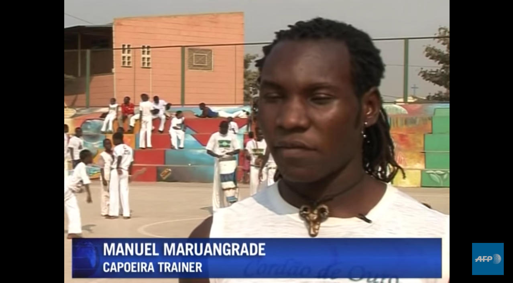
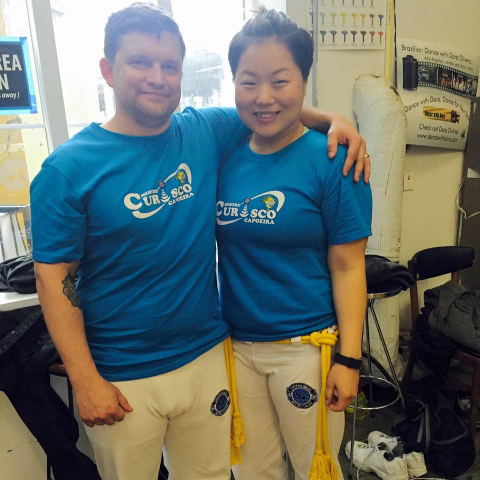
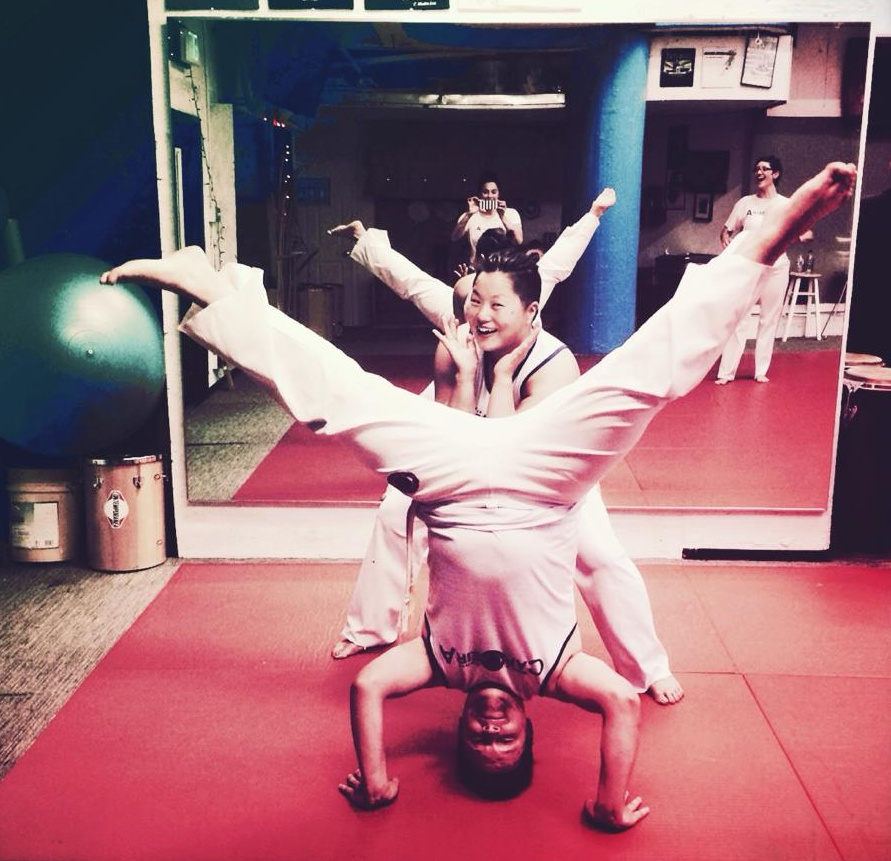

Capoeira
"Capoeira is a Brazilian art form that combines elements of martial arts, music, and dance. It was created by African slaves during the colonial period in Brazil as a way to resist the oppression of the Portuguese. Capoeira has played an important part in shaping the culture of Brazil and today various forms of the martial art are practiced throughout the world." (Source: curisco.com)
A short video on the history of Capoeira!
My husband and I began taking Capoeira classes in early 2015, through a friend, and we have been in love with it ever since! Here's a picture of us at the 2016 Batizado, where we earned our yellow cord.
Outdoor Capoeira classes in the summertime are my favorite. Our group meets 2-3 days a week!
Check out Seattle Capoeira Malês
Bonus head-stand pic :)
